FIAP · GLOBAL SOLUTION 2026.2 · CITIZENTECH · ENGENHARIA DE SOFTWARE 4º ANO (4ES)
Robotic Process Automation · Do Processo Manual à Automação Inteligente
| Nome completo | RM |
|---|---|
| Pedro Henrique Pedrosa Tavares | RM97877 |
| Disciplina | Robotic Process Automation · Prof. Bruno Diniz e Profª Cibele Ribeiro |
| Repositório GitHub | {{REPO}} |
| Vídeo demonstrativo | {{VIDEO_HTML}} |
| MVP (público) | https://contaclara-gs.azurewebsites.net |
| Tecnologia | Python 3 (biblioteca padrão), GitHub Actions, APIs da ANEEL, Open-Meteo e do MVP, ntfy.sh |
São Paulo, novembro de 2026.
O Conta Clara é um assistente de energia para famílias de baixa renda, idosos que moram sozinhos e quem já teve corte ou conta muito acima do esperado. O piloto acontece em bairros da zona sul de São Paulo atendidos pela Enel SP, com apoio de um CRAS e de associações de moradores. O cidadão anota o número do medidor de luz, vê quanto a conta deve dar antes de ela chegar e confere se a distribuidora cobrou certo. Se a cobrança diverge, recebe pronto o texto da contestação, com base na REN ANEEL nº 1.000/2021.
Problema operacional que o robô resolve: a estimativa que o cidadão vê depende de duas informações que mudam: a tarifa homologada (reajuste anual da distribuidora) e a bandeira tarifária (muda todo mês). No MVP, os dois valores eram fixos (TARIFA_KWH=0.92, BANDEIRA=amarela). Mantê-los certos exigia um voluntário que, todo mês, entrasse no portal da ANEEL, encontrasse a tarifa B1 residencial da Enel SP numa base com mais de 300 mil linhas, convertesse R$/MWh em R$/kWh com impostos, atualizasse o sistema, passasse a limpo a planilha de leituras do mutirão e avisasse uma a uma as famílias com conta alta. São de 3 a 4 horas por mês, com muito risco de erro. Quando atrasa, a família recebe uma estimativa errada e o aviso de conta alta chega depois da fatura.
O processo é disparado por agendamento diário, às 08h, no GitHub Actions. Rodar todo dia é seguro porque o robô é idempotente: alerta já enviado no mês não se repete e, se o MVP já está atualizado, a decisão é SEM_MUDANCA. Além disso, a bandeira nova é captada assim que a ANEEL a publica, mesmo com atraso. O estado (cache da ANEEL e alertas enviados) é guardado entre execuções com actions/cache. O processo tem três fases. O BPMN 2.0 completo está em docs/processo.bpmn, que abre no bpmn.io ou no Camunda Modeler; a figura da página seguinte é gerada do mesmo arquivo de layout. O PDD está em docs/PDD.md.
| Fase | Etapas |
|---|---|
| 1. Coleta e decisão | Coleta da bandeira e da tarifa na API CKAN da ANEEL → validação (vigência, unidade, trava de sanidade) → cache da coleta boa (ou recuperação pelo cache) → previsão de calor no Open-Meteo → geração do contrato tarifa_vigente.json/.env → leitura do /api/config do MVP e decisão (ATUALIZAR, SEM_MUDANCA, NAO_PUBLICAR, INDEFINIDA) → leitura e validação das entradas |
| 2. Lote de casas (repetição) | Para cada casa: obter leituras (API do MVP ou planilha do mutirão) → 2 ou mais leituras válidas? → calcular consumo, projeção de 30 dias e conta com o ICMS da faixa e o adicional da bandeira → acima do limite (ou perto, com calor)? → alerta push sem reenvio → próxima casa |
| 3. Publicação e encerramento | Se --publicar-azure e a decisão for ATUALIZAR: atualizar TARIFA_KWH/BANDEIRA no App Service e confirmar em /api/config → gravar saídas, log e auditoria → código de saída 0, 1 ou 2 |
| Entradas | API ANEEL (Bandeira Tarifária – Acionamento; Tarifas Homologadas das Distribuidoras) · API Open-Meteo · API do MVP (/api/config, /api/leituras) · entrada/casas_mvp.csv · entrada/leituras_mutirao.csv |
|---|---|
| Saídas | saida/AAAA-MM/: tarifa_vigente.json, tarifa_vigente.env, estimativas.csv, alertas.json, rejeitados.csv, resumo_execucao.json · push no ntfy.sh · logs/robo-<id>.log · logs/auditoria.jsonl |
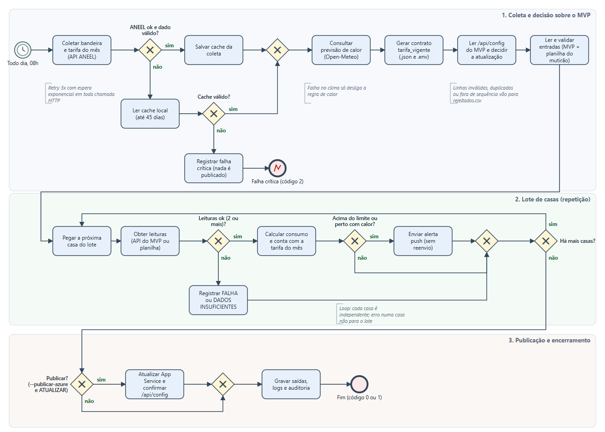
docs/processo.bpmn.| Tecnologia | Uso | Por que |
|---|---|---|
Python 3.10 ou mais novo, só biblioteca padrão (urllib, csv, json, logging, unittest) | todo o robô e os testes | o processo é integração de APIs e arquivos (não há tela para "clicar"), então Python é mais robusto e versionável que RPA de interface. Sem dependências: roda em qualquer máquina do CRAS e no Actions, sem pip install e sem risco de cadeia de suprimentos |
API CKAN da ANEEL (datastore_search) | bandeira do mês e tarifa B1 vigente, com filtro no servidor | fonte oficial e aberta (ODbL); o filtro evita baixar o CSV de mais de 300 mil linhas |
| Open-Meteo | máxima prevista para 7 dias na zona sul de SP | gratuita, sem chave, já usada no componente de Dados |
| API do MVP + Azure CLI (opcional) | ler a configuração e as leituras; publicar TARIFA_KWH/BANDEIRA | o MVP já lê esses dois valores de variáveis de ambiente: a integração não exige mudar o código dele |
| GitHub Actions (cron) | execução diária sem intervenção, estado guardado entre execuções, testes a cada push, artefatos de auditoria por 90 dias | gratuito, com segredos (CASAS_MVP_CSV, NTFY_URL) fora do código |
| ntfy.sh | alerta push no celular do agente ou da família | sem conta e sem app obrigatório (abre no navegador); é o mesmo canal de alertas do monitoramento do MVP |
| BPMN 2.0 | desenho do processo | padrão aberto, editável no bpmn.io e no Camunda |
Organização do código em src/robo_conta_clara/: fontes.py (ANEEL, Open-Meteo, cache), entrada.py (validação), regras.py (cálculo e decisão), mvp.py (integração), alertas.py (push idempotente), auditoria.py (logs e mascaramento), http.py (tempo limite e novas tentativas) e robo.py (orquestração). O ponto de entrada é src/executar.py.
| Regra | Definição |
|---|---|
| Tarifa sem tributos | (TUSD + TE) ÷ 1000. Em nov/2026, ELETROPAULO B1 residencial convencional, REH nº 3.596/2026: (472,42 + 316,96) ÷ 1000 = 0,78938 R$/kWh |
| Tributos ("por dentro", como na fatura) | tarifa ÷ (1 − ICMS − PIS/COFINS). ICMS residencial SP por faixa: até 90 kWh 0%, até 200 kWh 12%, acima 18%; PIS/COFINS 5% (aproximação configurável em config.json). O contrato do MVP usa a faixa de referência de 150 kWh: 0,78938 ÷ 0,83 = 0,9511 R$/kWh |
| Bandeira | competência AAAA-MM-01. Nome ANEEL convertido para as chaves do MVP (verde, amarela, vermelha1, vermelha2); adicional R$/MWh ÷ 10 = R$ por 100 kWh. Mês ainda não publicado: usa o último e marca bandeira_provisoria |
| Consumo e conta | consumo diário = (última − primeira leitura) ÷ dias; projeção = ×30; conta = kWh × tarifa da faixa + kWh/100 × adicional (mesma fórmula do MVP: 172,5 kWh com 0,92 + amarela = R$ 161,95, igual à tela) |
| Decisão por casa | ACIMA_DO_LIMITE se conta > limite; ATENCAO_CALOR se conta ≥ 90% do limite e 3 ou mais dias com máxima ≥ 32 °C; DADOS_INSUFICIENTES com menos de 2 leituras válidas; senão OK |
| Decisão sobre o MVP | ATUALIZAR (valores diferentes) · SEM_MUDANCA · NAO_PUBLICAR (bandeira sem suporte, ex.: escassez hídrica, que pede revisão humana) · INDEFINIDA (MVP fora) |
| Repetição | laço sobre a coleção de casas (MVP + mutirão); cada casa é processada e registrada de forma independente |
| Validação da planilha | id CASA-000; data ISO e não futura; kWh inteiro de até 6 dígitos; limite de R$ 10 a R$ 5.000; aceita , ou ; (Excel PT-BR); duplicata idêntica ignorada; dois valores no mesmo dia descartados; leitura fora da sequência do medidor descartada |
Resultado real da competência 2026-11 (9 casas: 1 do MVP e 8 do mutirão):
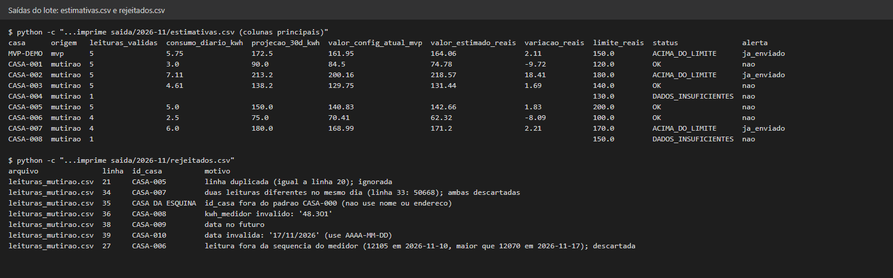
estimativas.csv (status e valor por casa, comparando com a configuração antiga do MVP) e rejeitados.csv (7 linhas com motivo). O campo alerta=ja_enviado é da segunda execução do mês.| Falha prevista | Tratamento | Resultado |
|---|---|---|
| API fora do ar, tempo esgotado, 5xx ou 429 | 3 tentativas com espera exponencial (2, 4 e 8 s); 4xx não é repetido | registro no log |
| ANEEL indisponível ou com dado inválido | recupera pela última coleta válida (cache de até 45 dias), marcada em origem_dados | código 1 |
| ANEEL fora e sem cache válido | falha crítica: nada é publicado nem alertado com dado duvidoso | código 2 (job vermelho) |
| Tarifa absurda ou número ilegível | trava de sanidade (0,20 a 3,00 R$/kWh) e parser de número brasileiro: vira falha da fonte | cache ou código 2 |
| Open-Meteo fora | só a regra de calor é desligada, com aviso no resumo | código 0 |
| MVP fora / código de casa revogado (401) | a casa vira FALHA e as demais seguem; decisão INDEFINIDA | código 1 |
| Arquivo ausente, vazio, sem colunas ou com codificação errada | erro registrado; o lote segue com a outra origem | código 1 |
| Linhas duplicadas, inconsistentes ou inválidas | descartadas com linha e motivo em rejeitados.csv | registro |
| Push falhou | fica pendente e é reenviado na próxima execução; push enviado nunca se repete (estado por competência) | código 1 |
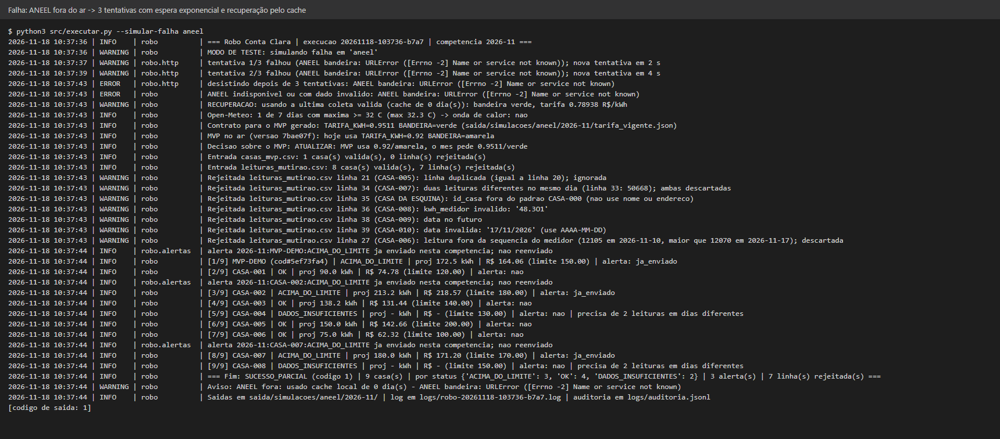
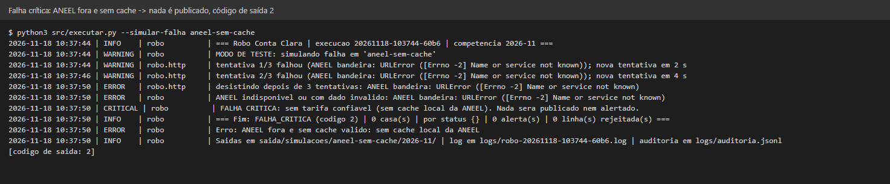
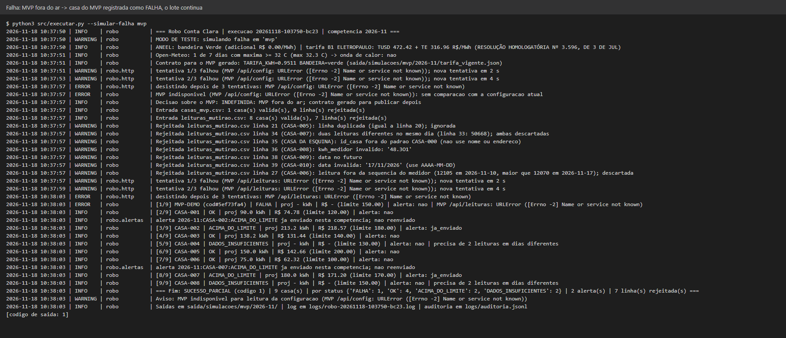
Cada execução recebe um run_id e gera: (a) logs/robo-<run_id>.log, legível, com data e hora (Brasília), nível, módulo e mensagem; (b) uma linha JSON por evento em logs/auditoria.jsonl (início, coleta, decisão, entrada, cada casa, publicação e fim, com contagens); (c) resumo_execucao.json com situação, código de saída, origem da tarifa, avisos, erros e contagem por status. No GitHub Actions, saida/ e logs/ viram artefato guardado por 90 dias. Os logs não contêm nome, endereço nem código de casa: o código aparece como cod#5ef73fa4 (hash) e um filtro mascara cabeçalhos, tokens e tópicos do ntfy.
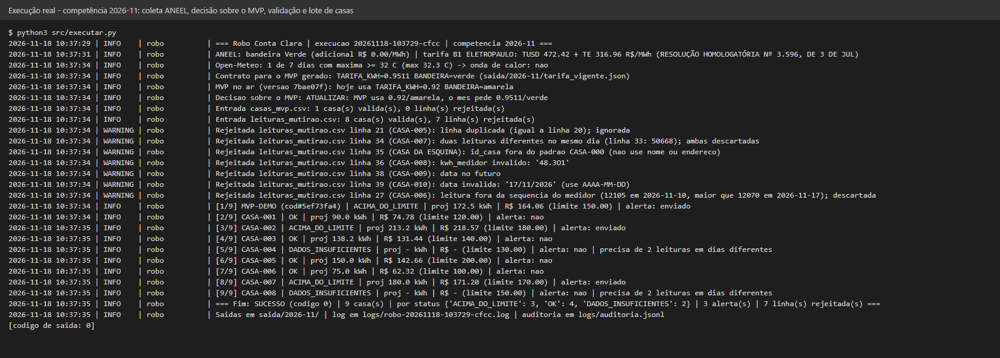
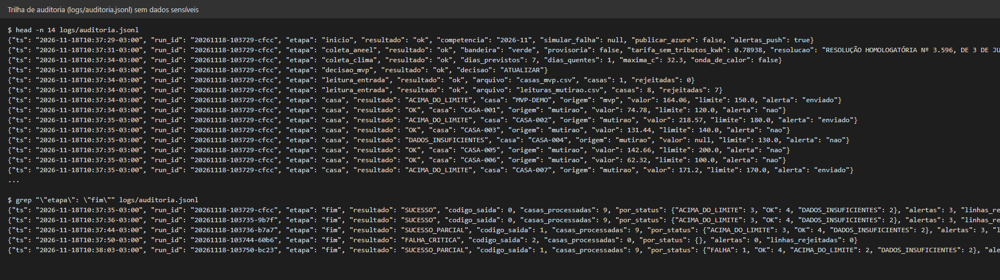
logs/auditoria.jsonl).A integração tem dois sentidos, e os dois são verificáveis:
GET /api/config, que hoje mostra tarifa_kwh 0.92 e bandeira amarela, para decidir a atualização, e lê GET /api/leituras da casa de demonstração (código no cabeçalho X-Codigo-Casa) para recalcular a estimativa. A tela do MVP mostra R$ 161,95 com a configuração fixa; com a tarifa real de novembro, o robô calcula R$ 164,06 e alerta, porque o limite dessa casa é R$ 150.saida/tarifa_vigente.json (versao_contrato: 1) e o tarifa_vigente.env trazem exatamente as variáveis que o MVP lê (TARIFA_KWH, BANDEIRA) e que aparecem em /api/config e na conta estimada da tela. Com --publicar-azure, o robô grava esses valores no App Service e confirma lendo /api/config até eles aparecerem. O mesmo contrato serve para a camada Ouro do componente de Dados (detalhes em integracao-mvp/README.md).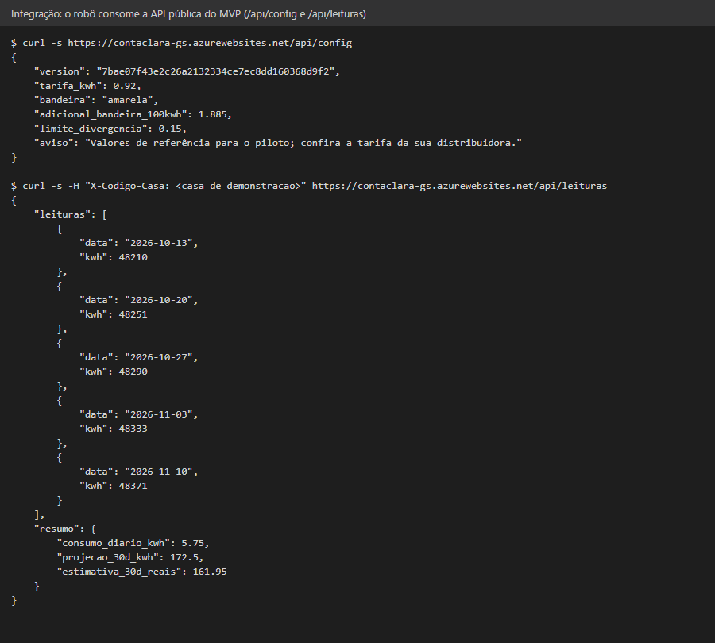
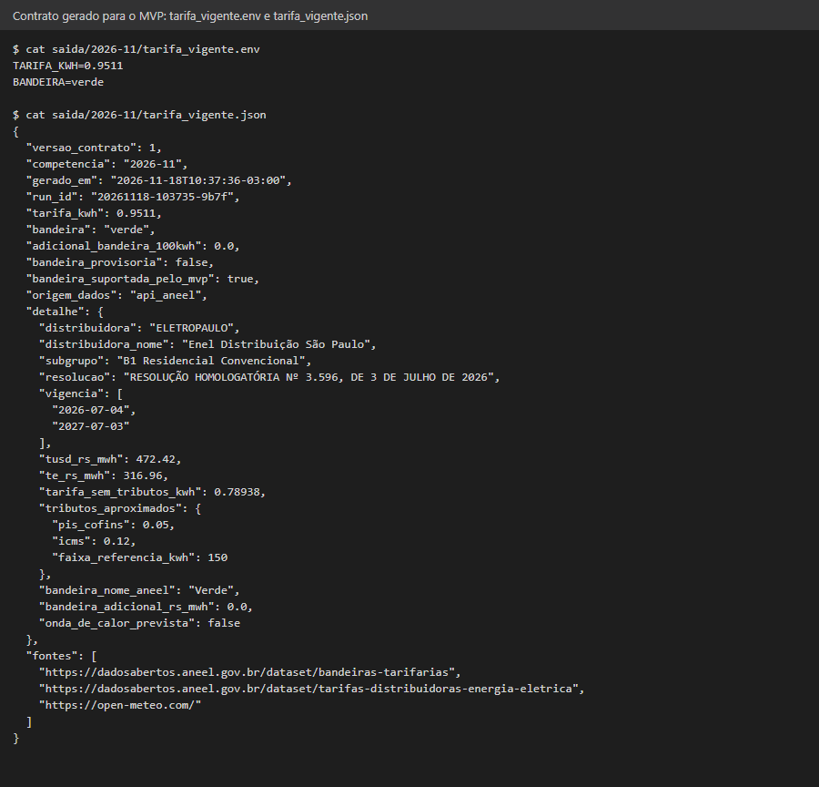
.env e .json).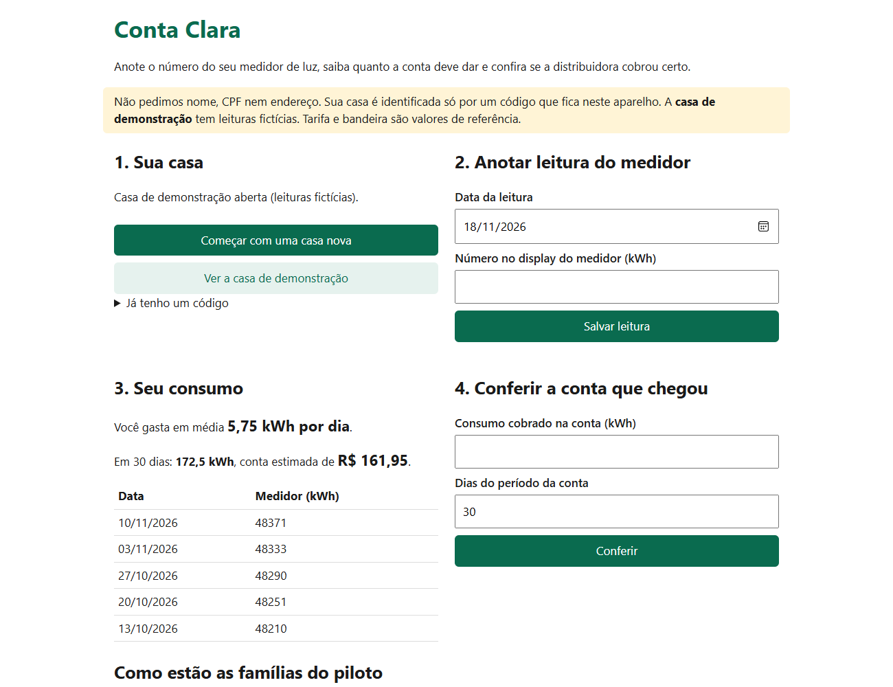
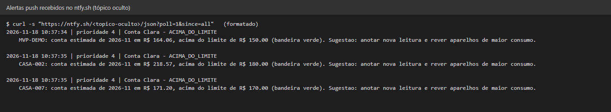
Automatizados: 34 testes com unittest (python -m unittest discover -s tests -v), sem internet. As APIs são substituídas por um dublê, e o cliente HTTP é testado contra um servidor local real. Todos passam no Linux e no Windows (Python 3.12). A lista completa está em tests/README.md.
| Tipo | Cenário | Resultado esperado e obtido |
|---|---|---|
| Sucesso | Execução completa com todas as fontes no ar | contrato 0.9511/verde, status por casa, código 0 |
| Sucesso | Nenhum log ou saída contém o código da casa | ok (LGPD) |
| Decisão | MVP já atualizado | SEM_MUDANCA |
| Decisão | Casa a 94% do limite com onda de calor | ATENCAO_CALOR |
| Decisão | Bandeira vermelha P2 | casa passa a ACIMA_DO_LIMITE |
| Decisão | Bandeira de escassez hídrica | NAO_PUBLICAR, código 1 |
| Decisão | Duas execuções no mesmo mês | um único push |
| Falha | ANEEL 503 com cache / sem cache | cache e código 1 / código 2 sem contrato |
| Falha | Código de casa revogado (401) · MVP fora · Open-Meteo fora · planilha ausente · ntfy fora | só o item afetado falha; o lote segue; código coerente |
| Unidade | ICMS por faixa, número brasileiro, bandeiras, vigência, duplicatas, datas, pico de anotação, novas tentativas | ok |
Executados de verdade (18/11/2026, APIs reais): (1) execução normal: SUCESSO, 3 alertas push entregues (Fig. 6 e 11); (2) reexecução: alertas ja_enviado, sem duplicar (Fig. 13); (3) ANEEL fora: recuperação pelo cache (Fig. 3); (4) sem cache: falha crítica (Fig. 4); (5) MVP fora: lote segue (Fig. 5).
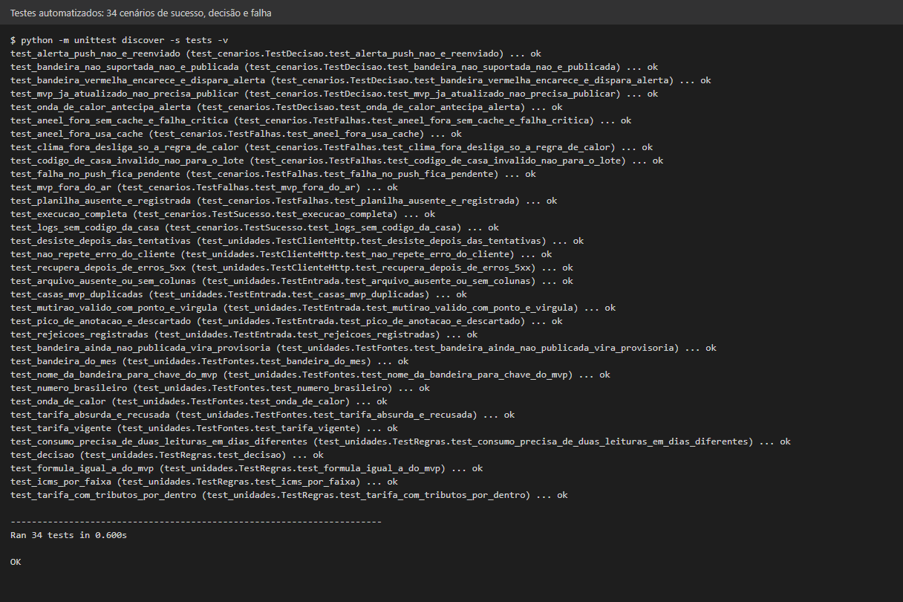
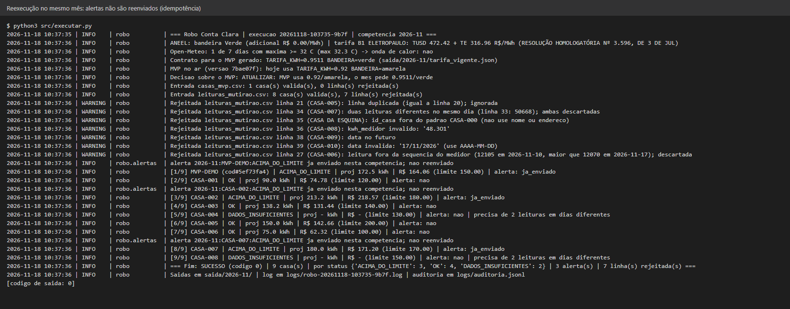
CASA-001), e a validação recusa ids que pareçam nome ou endereço (ex.: "Casa da esquina").CASAS_MVP_CSV e o tópico do ntfy, de NTFY_URL. O .gitignore cobre estado/, .env e entrada/privado/. O workflow roda com permissão só de leitura e recebe a entrada manual por variável de ambiente, o que evita injeção de comando.NAO_PUBLICAR); a publicação exige az login de quem tem permissão e é confirmada lendo o MVP.O robô transforma um processo manual de 3 a 4 horas por mês, sujeito a erro, numa rotina agendada de poucos segundos. Ele usa a tarifa e a bandeira oficiais da ANEEL, valida e corrige as entradas do mutirão, decide por casa quem precisa de aviso e entrega ao MVP um contrato verificável, com tratamento explícito de cada falha e trilha de auditoria sem dados pessoais. Na primeira execução real, o robô detectou que o MVP ainda usava a bandeira amarela quando a ANEEL já tinha acionado a verde, e que a tarifa homologada de julho de 2026 já estava em vigor. Isso mostra o valor da automação para a estimativa que o cidadão vê. Próximos passos: Tarifa Social (desconto por faixa) para as famílias inscritas no CadÚnico, e o envio do alerta direto ao aplicativo da família.
| Repositório GitHub | {{REPO}} |
| Vídeo demonstrativo | {{VIDEO_HTML}} |
| MVP | https://contaclara-gs.azurewebsites.net · /api/config |
| BPMN e PDD | docs/processo.bpmn · docs/PDD.md |
| Fontes de dados | ANEEL Bandeiras · ANEEL Tarifas · Open-Meteo |